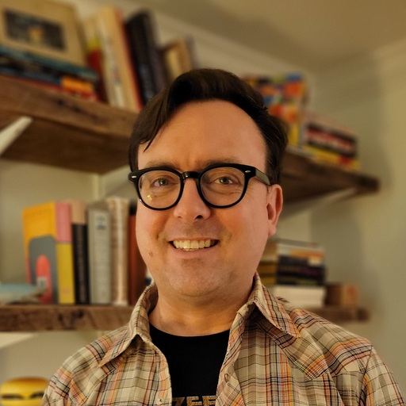

Some belated updates on this in case you’re not aware:
• Date: 9/18
• Time: 5-8:00 PM ET
• Place: Canarts, 600 Bay St., #410 (around the corner from the Airflow Summit venue)
• Venue phone: 416-805-2286
• Meetup for more info and to sign up: https://www.meetup.com/openlineage/events/295488014/?utm_medium=referral&utm_campaign=share-btn_savedevents_share_modal&utm_source=link
toronto-meetup
Created by Michael Robinson on Wednesday, August 16th, 2023
Michael RobinsonFriday, August 25th, 2023 at 1:30:07 PM GMT-04:00
🎉4
🙌4

Harel SheinFriday, August 25th, 2023 at 1:33:42 PM GMT-04:00
really looking forward to meeting all of you in Toronto!!

Julien Le DemFriday, September 1st, 2023 at 11:10:51 PM GMT-04:00
Most OpenLineage regular contributors will be there. It will be fun to be all in person. Everyone is encouraged to join
🙌6
Michael RobinsonMonday, September 11th, 2023 at 10:13:57 AM GMT-04:00
@channel
It’s hard to believe this is happening in just one week! Here’s the updated agenda:
1. Intros
2. Evolution of spec presentation/discussion (project background/history)
3. State of the community
4. Integrating OpenLineage with Metaphor (by special guests Ye & Ivan)
5. Spark/Column lineage update
6. Airflow Provider update
7. Roadmap Discussion
8. Action items review/next steps
Find the details and RSVP here.
It’s hard to believe this is happening in just one week! Here’s the updated agenda:
1. Intros
2. Evolution of spec presentation/discussion (project background/history)
3. State of the community
4. Integrating OpenLineage with Metaphor (by special guests Ye & Ivan)
5. Spark/Column lineage update
6. Airflow Provider update
7. Roadmap Discussion
8. Action items review/next steps
Find the details and RSVP here.
🙌1
Greg KimFriday, September 15th, 2023 at 10:11:11 AM GMT-04:00
@Greg Kim has joined the channel
Michael RobinsonFriday, September 15th, 2023 at 12:17:29 PM GMT-04:00
Looking forward to seeing you on Monday! Here’s the time/place info again for your convenience:
• Date: 9/18
• Time: 5-8:00 PM ET
• Place: Canarts, 600 Bay St., #410 (around the corner from the Airflow Summit venue)
• Venue phone: 416-805-2286
• Meetup page with more info and signup: https://www.meetup.com/openlineage/events/295488014/?utm_medium=referral&utm_campaign=share-btn_savedevents_share_modal&utm_source=link
Please send a message if you find yourself stuck in the lobby, etc.
• Date: 9/18
• Time: 5-8:00 PM ET
• Place: Canarts, 600 Bay St., #410 (around the corner from the Airflow Summit venue)
• Venue phone: 416-805-2286
• Meetup page with more info and signup: https://www.meetup.com/openlineage/events/295488014/?utm_medium=referral&utm_campaign=share-btn_savedevents_share_modal&utm_source=link
Please send a message if you find yourself stuck in the lobby, etc.
🙌1
Michael RobinsonMonday, September 18th, 2023 at 4:20:33 PM GMT-04:00
Hi, if you’re wondering if you’re in the right place: look for Uncle Tetsu’s Cheesecake nextdoor and for the address (600 Bay St) above the door. The building is an older one (unlike the meeting space itself, which is modern and well-appointed)